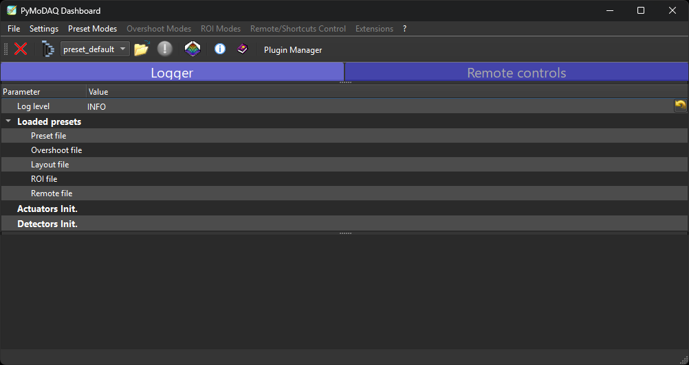
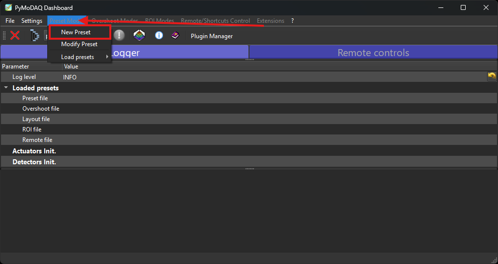

Utilisation de PyMoDAQ avec le Plugin Arduino
Cette notice explique comment lancer PyMoDAQ, créer un preset pour le plugin Arduino, piloter le ventilateur et le chauffage, et acquérir la température via la sonde PT100.
1. Lancer le Dashboard PyMoDAQ
Assurez-vous que l'Arduino Nano ESP32 est allumé et connecté au réseau WiFi avant de lancer PyMoDAQ.
Activez votre environnement virtuel, puis lancez le Dashboard :
.\venv\Scripts\activate
dashboard

2. Créer ou Charger un Preset
Au démarrage, le Dashboard vous demande de créer ou charger un preset : un fichier de configuration qui liste les modules à utiliser pour votre dispositif.
Créer un nouveau preset
- Cliquer sur Preset Mode dans le dashboard.
- Cliquer sur « New preset ».
- Donner un nom au preset (ex :
arduino_tp). -
Ajouter un module DAQ_Move et sélectionner le plugin
FanHeater:- Ce module gère le pilotage du ventilateur et du chauffage en mode multiaxe.
- Dans les paramètres du module, renseigner l'adresse IP du contrôleur Arduino.
- Vérifier le Controller ID — ce premier module sera défini comme Master.
-
Ajouter un module DAQ_Viewer et sélectionner
l'un des deux
plugins selon le capteur utilisé :
-
MAX31865— pour une sonde PT100 (résistive, haute précision). -
ADS1115— pour un capteur de température analogique via convertisseur ADC 16 bits. - Renseigner la même adresse IP que celle du DAQ_Move.
- Vérifier que le Controller ID est identique à celui du DAQ_Move — ce module sera en mode Slave.
-
- Sauvegarder le preset.

image à mettre — Capture de la fenêtre de création de preset
Charger un preset existant
Si un preset a déjà été configuré par l'enseignant, cliquer sur
« Load preset » et sélectionner le fichier
.xml correspondant.
3. Piloter le Ventilateur et le Chauffage
Une fois le preset chargé, le module DAQ_Move FanHeater apparaît dans le Dashboard. Il expose deux axes :
- Axe Chauffage (Master) : Commande le chauffage de 0 % à 100 %. C'est cet axe qui initialise la connexion avec l'ESP32.
- Axe Ventilateur (Slave) : Commande le ventilateur de 0 % à 100 %. Il partage la connexion ouverte par le Master.
Envoyer une consigne
-
Saisir la valeur souhaitée en pourcentage dans le champ de l'axe correspondant (ex :
75pour 75 %). - Appuyer sur Entrée ou cliquer sur « Move ».
- Le plugin convertit automatiquement la valeur en signal PWM (0–255) et l'envoie à l'ESP32 via Telemetrix.
image à mettre — Capture du module DAQ_Move FanHeater dans PyMoDAQ
191 (int(75 × 255 / 100)), appliquée sur la broche GPIO
correspondante de l'ESP32.
4. Acquérir la Température (PT100)
Le module DAQ_Viewer MAX31865 lit en continu la température mesurée par la sonde PT100 via le module MAX31865 connecté en SPI sur l'ESP32.
- Cliquer sur « Start » dans le module DAQ_Viewer.
- La température s'affiche en temps réel sous forme de graphique dans le Dashboard.
- Pour sauvegarder les données, activer le module Log Data natif de PyMoDAQ.
image à mettre — Capture du module DAQ_Viewer MAX31865 avec le graphique de température
5. Sauvegarder les Données
PyMoDAQ intègre nativement un module de sauvegarde des données appelé Log Data. Pour l'activer :
- Dans le Dashboard, cocher l'option « Log data » avant de lancer l'acquisition.
- Choisir le répertoire de sauvegarde.
- Les données sont enregistrées au format HDF5 (.h5) et peuvent être analysées avec PyMoDAQ ou tout outil compatible (Python, MATLAB…).